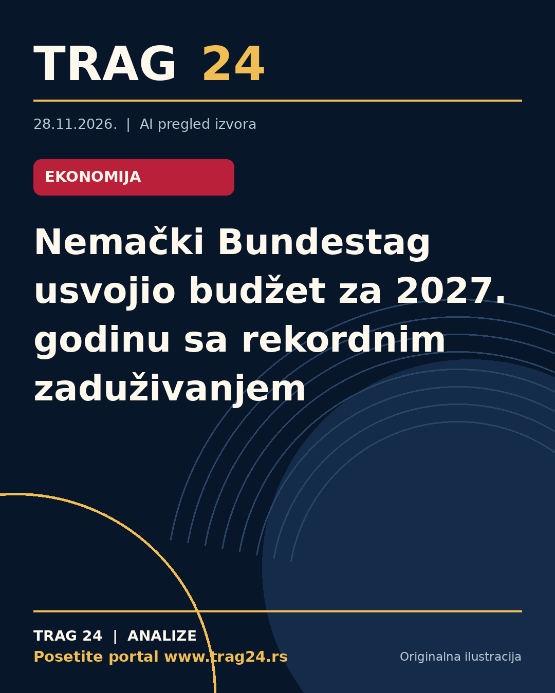

Nemački Bundestag usvojio budžet za 2027. godinu sa rekordnim zaduživanjem

ŠTA SE DOGODILO
Donji dom nemačkog parlamenta Bundestag usvojio je budžet za 2027. godinu u ukupnoj vrednosti od 556 milijardi evra. Ovaj budžet predviđa značajno povećanje izdvajanja za odbranu i infrastrukturu, a istovremeno podrazumeva novo neto zaduživanje veće od 210 milijardi evra.
HRONOLOGIJA
Budžet je usvojen danas u Donjem domu parlamenta. Sledeći korak je razmatranje zakona o budžetu u gornjem domu nemačkog parlamenta, Bundesratu, koji je zakazan za 18. decembar. Ovaj proces je deo godišnje procedure usvajanja državnog budžeta u Nemačkoj.
ŠTA NAVODE IZVORI
Prema informacijama koje su predstavili Kurir i Insajder, Ministarstvo rada i socijalnih pitanja dobiće najveći deo budžeta sa oko 203 milijarde evra. Za odbranu je predviđeno oko 110 milijardi evra iz redovnog budžeta, dok se dodatnih gotovo 30 milijardi evra izdvaja iz posebnog vojnog fonda Bundesvera. Novi iznos zaduživanja od preko 210 milijardi evra raspoređen je tako da će oko 123 milijarde evra biti preko redovnog budžeta, 58 milijardi kroz fond za infrastrukturu i klimatsku neutralnost, te oko 30 milijardi evra iz vojnog fonda. Zaduživanje se sprovodi uglavnom izvan uobičajenih ustavnih ograničenja za dug, kako bi se omogućile investicije u modernizaciju vojske i infrastrukture.
ŠTA JE POTVRĐENO
Potvrđeno je usvajanje budžeta u Donjem domu Bundestaga sa navedenim brojkama, kao i da će troškovi servisiranja javnog duga porasti za više od trećine, na oko 41 milijardu evra. Takođe je zvanično da će sledeći korak biti razmatranje budžeta u gornjem domu parlamenta sredinom decembra. Budžet uključuje specifične fondove za infrastrukturu, klimatsku neutralnost i odbranu, što je jasno definisano u oba izvora.
ŠTA NIJE POTVRĐENO
Iz dostupnih tekstova nema detalja o rešenjima ukoliko Bundesrat eventualno ne usvoji predloženi budžet. Takođe, nema dodatnih informacija o tome kako će se eventualno ograničiti rashodi u drugim oblastima, niti o daljim ekonomskim posledicama ovakvog nivoa zaduživanja na nemačku ekonomiju.
ŠTA OSTАJE OTVORENO: Ostaje otvoreno da li će gornji dom nemačkog parlamenta usvojiti ovaj budžet bez izmena na predviđenom sastanku 18. decembra. Takođe nije poznato kako će dugoročno povećano zaduživanje i troškovi duga uticati na budžetsku politiku Nemačke i njenu ekonomsku stabilnost. Nije poznato ni kako će se modernizacija Bundesvera i infrastrukture odvijati u praksi nakon ove odluke.
Izvori
- https://www.kurir.rs/planeta/10175020/bundestag-usvojio-budzet-za-2027
- https://insajder.net/prenosimo/nemacki-bundestag-usvojio-budzet-za-narednu-godinu-uz-novo-zaduzivanje-od-210-milijardi-evra
Ova analiza je pripremljena uz pomoć veštačke inteligencije na osnovu javno dostupnih izvora. Navodi izvora nisu nužno nezavisno potvrđeni.